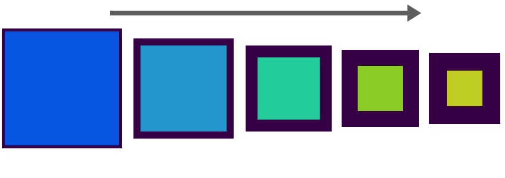

(function () {
var box = document.getElementById('traditional-example'),
duration = 1000,
start = (new Date).valueOf(),
finish = start + duration,
interval;
interval = setInterval(function () {
var time = (new Date).valueOf(), frame = time > finish ? 1 : (time - start) / duration;
// The thing being animated
box.style.height = (frame * 500) + 'px';
if (time > finish) {
clearInterval(interval);
}
}, 10);
})();
function animate() { var element = document.getElementById('traditional-example'), duration = 1000, start = (new Date).valueOf(), finish = start + duration, interval;interval = setInterval(function () { var time = (new Date).valueOf(), frame = (time - start) / duration;if (time > finish) { frame = 1; clearInterval(interval); } element.style.height = (frame * 200) + 'px'; }, 10); }
// jQuery Animation $('#box').animate({left:100, opacity: 0.5}, 1000);// MooTools Animation var transition = new Fx.Morph('box', {duration: 1000}); transition.start('.left');
.left {
top: 100px;
opacity: 0.5;
}
| Safari 3+ | Chrome 4+ | FireFox 3.6 | FireFox 4.0 | Opera 10.5+ | IE8 | |
|---|---|---|---|---|---|---|
| Transforms | YES | YES | YES | YES | YES | NO |
| Transitions | YES | YES | NO | YES | YES | NO |
| Animations | YES | YES | NO | NO | NO | NO |
NOTE: FireFox 4.0 does not yet support the animation of transforms.
-moz – Mozilla-webkit – Safari, Chrome, WebKit-o – Opera.animated {
-moz-transition: all 0.4s ease-out;
-webkit-transition: all 0.4s ease-out;
-o-transition: all 0.4s ease-out;
}
x and y axis#transform-image {
transform: translate(20px, 30px);
}
document.getElementById('transform-image').style.webkitTransform = 'translate(100px, 20px)';
transform-origin#transform-image {
transform: rotate(45deg);
transform-origin: 50% 50%;
}
document.getElementById('transform-image').style.webkitTransform = 'rotate(45deg)';
x and y axes#transform-image {
transform: skew(15deg, 45deg);
}
document.getElementById('transform-image').style.webkitTransform = 'skew(15deg, 45deg)';
x and y axis#transform-image {
transform: scale(2, 2);
}
document.getElementById('transform-image').style.webkitTransform = 'scale(2, 2)';

#image caption { opacity: 0; height: 0; }#image caption:hover { opacity: 1; height: 30px; }
#image caption { opacity: 0; height: 0;transition-property: opacity, height; transition-duration: 0.4s, 0.4s; }#image caption:hover { opacity: 1; height: 30px; }
#image caption { opacity: 0; height: 0;transition-property: opacity, height; transition-duration: 0.4s, 0.4s; transition-timing-function: ease-out, linear; transition-delay: 2s, 2s; }#image caption:hover { opacity: 1; height: 30px; }
.loading-bar { background: url(stripes.png) repeat-x 0 0; }@keyframes loading { from { background-position: 0 0; } to { background-position: 100px 0; } }
.loading-bar { /* Other styles here... */ background: url(stripes.png) repeat-x 0 0;animation-name: loading; animation-duration: 2s; animation-iteration-count: infinite; animation-timing-function: linear; animation-direction: normal; /* 'linear' or 'alternate' */ }
:hover => mouseover/mouseout:active => mousedown/mouseup:focus => focusbutton { transition: color 2s ease; border: 3px solid #a50421; background-color: #ff0433; /* Red Button */ }button:hover { background-color: #ffdc00; border-color: #b19904; /* Yellow Button */ }button:active { background-color: #98ff3d; border-color: #68b428; /* Green Button */ }
click or mouseover.var element = document.getElementById('form'), button = document.getElementById('trigger');// Add an event listener to our button. button.addEventListener('click', function (event) { // When clicked change the styles of the element. element.className = 'active'; }, false);
transitionend event supported by FireFox 4.0.webkitTransitionEnd and Opera use OTransitionEndelement.addEventListener('transitionend', function (event) {
event.propertyName; // CSS property associated with the transition.
event.elapsedTime; // Time (s) the transition took to complete.
}, false);
var transition = (function () { var transition = '', types = ['transition', 'webkitTransition', 'OTransition', 'MozTransition'], count = types.length, index = 0, style;if (!window.getComputedStyle) { return transition; }style = window.getComputedStyle(document.documentElement, null); for (;index < count; index += 0) { if (types[index] in style) { transition = types[index]; break; } } return transition; })();
transitionend event.var transition_event = 'transitionend';if (transition === 'webkitTransition' || transition === 'OTransition') { transition_event = transition + 'End'; }
transitionend events (One per property)var element = document.getElementById('form');function onAnimationComplete() { // Do something useful. }if (transition) { element.style[transition + 'Property'] = 'height'; element.style[transition + 'Duration'] = '2s'; element.style[transition + 'TimingFunction'] = 'linear'; element.style.height = '200px'; element.addEventListener(transition_end, function (event) { onAnimationComplete(); }, false); } else { // Use standard animation method... $(element).animate({height:200}, 2000, onAnimationComplete); }
My Neighbour Totoro (1988)